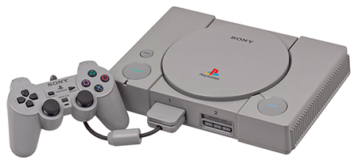
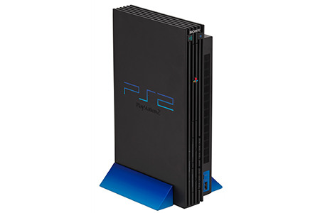
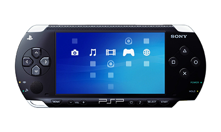
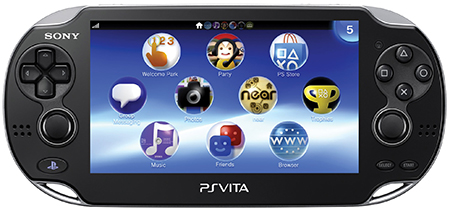
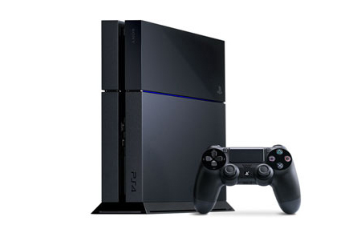

The History Of The Famous Playstation
Playstation 1
Long before there was such a thing as affordable CD-ROM gaming or 3D polygonal graphics, Sony Computer Entertainment Inc. (SCEI) set the not-too-humble goal of creating a gaming platform that would become as pervasive as the VCR and change the industry forever. In 1994, Sony Computer Entertainment America (SCEA) was founded as the North America division of Sony Computer Entertainment Inc. Taking approximately four years to develop, the PlayStation® game console was introduced in the United States in 1995. The launch of the PlayStation® brand was a sensation. In the very first weekend, more than 100,000 units were sold. In the first six months, over a million were sold. In April 1997, with nearly 4 million PlayStation® game consoles in North America, we found a way to strengthen our bond with PlayStation® owners even more. Our interactive relationship marketing program, PlayStation® Underground, gives us the opportunity to recognize and reward our loyal gamers. Members of the PlayStation®Underground can feel as though they belong to a subculture of intense gamers by experiencing new game challenges and getting the scoop on upcoming games, merchandise, and special offers.
Playstation 2
The company next set its sights on development of the PlayStation®2, which became available to consumers in November 2000. With its incredible power and the exciting, and exclusive ability to play both CDs and DVD movies, this new system was unstoppable, making it possible for smooth, lifelike animation to be shown in real time as well as helping to establish DVD as the standard optical disk media format worldwide. Now in the tenth year of its product lifecycle, PlayStation®2 is still going strong and continues to be one of the world’s most popular video game systems, with more than 50 million units sold in North America alone. During its lifespan, PS2™ not only has pushed video gaming to the forefront of entertainment, but also introduced the concept of an entertainment system becoming a hub in the living room. To-date the PlayStation®2 system has served as the entertainment centerpiece in many living rooms, accounting for one in three homes across the U.S.
PSP
In March 2005, the PlayStation®Portable (PSP®) was launched in North America, bringing an unparalleled gaming experience to a handheld platform. PSP® offers consumers many reasons to take their entertainment on the road—whether it’s to watch a movie, listen to music, view their photos, play games or connect to the Internet. In 2009, we upped the ante, making it even easier for consumers to both take and download content on the road with the introduction of the PSP®go. PSP®go represents the latest evolution of the PlayStation®Portable, specifically designed for the digitally savvy consumer. The PSP®go leverages PlayStation®Network and digital content exclusively, offering 16GB of internal memory and expandable storage for all the latest in exclusive games as well as videos, music, and photos.
PS3
On November 17, 2006, Sony Computer Entertainment America revolutionized the way games are played and developed by releasing the PlayStation®3 (PS3™) computer entertainment system. The PlayStation®3 system reset the bar for entertainment by utilizing a combination of Cell and RSX™ processors, a state-of-the-art Blu-ray player and a pre-installed hard disk drive (HDD). Equipped with basic input/output ports, PS3™ supports a broad range of displays from conventional NTSC/PAL standard TVs to the latest full HD (1080i/1080p) flat panel displays, offering the joy of the most advanced computer entertainment content to homes around the world. These technological advancements coupled with its all-in-one entertainment solution made PS3™ the most advanced computer system, which served as a platform to enjoy next-generation games and the best in home entertainment on the market
PS Vita
On February 22, 2012, SCEA launched the revolutionary PlayStation®Vita. Deep and immersive gaming is at the core of PlayStation’s DNA, and PS Vita is the latest embodiment of this vision. This system offers a revolutionary combination of rich gaming and social connectivity within a real world context. Wi-Fi and 3G network connectivity on PS Vita, together with various applications including Facebook, foursquare, Skype and Twitter, enable infinite possibilities for users to "encounter", "connect", "discover", "share" and "play" with friends wherever they are.
PS4
PlayStation 4 (PS4) is a line of home video game consoles developed by Sony Interactive Entertainment. Announced as the successor to the PlayStation 3 during a press conference on February 20, 2013, it was launched on November 15 in North America, November 29 in Europe, South America and Australia; and February 22, 2014, in Japan. It competes with Nintendo's Wii U and Microsoft's Xbox One, as part of the eighth generation of video game consoles.